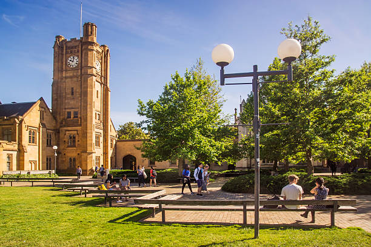
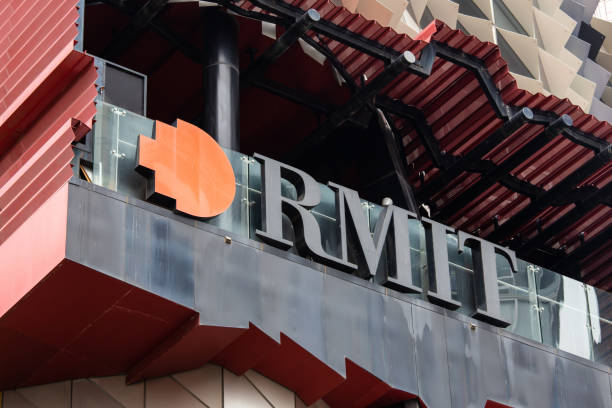
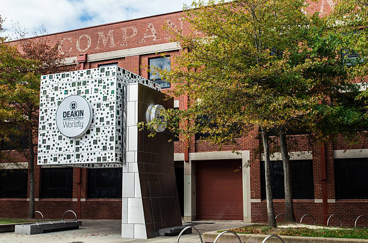
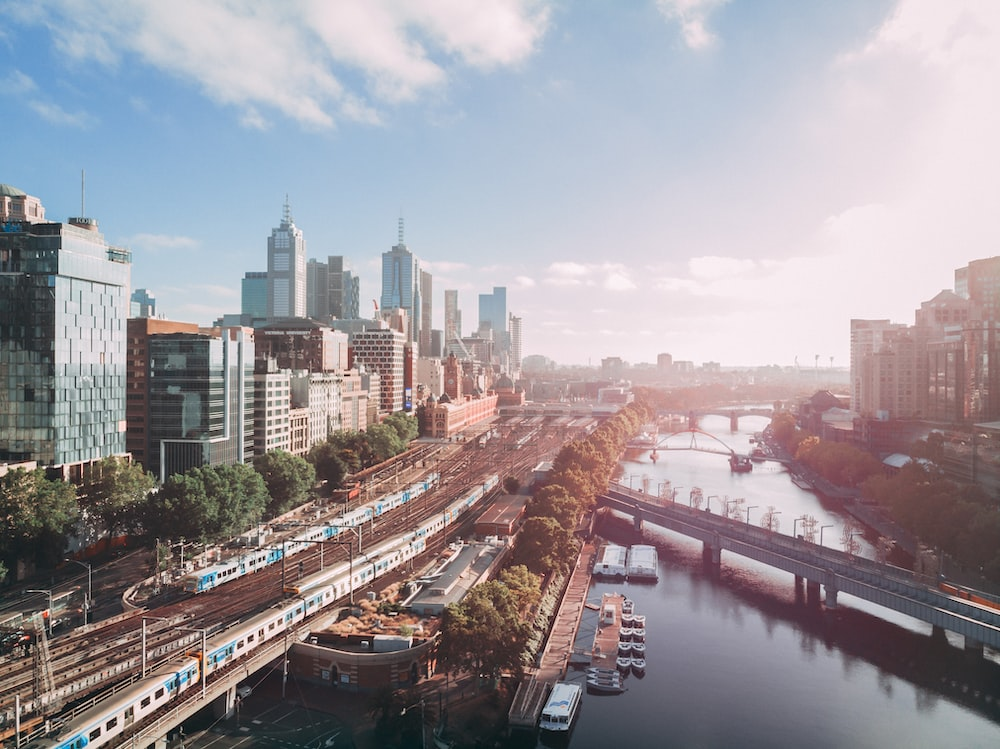
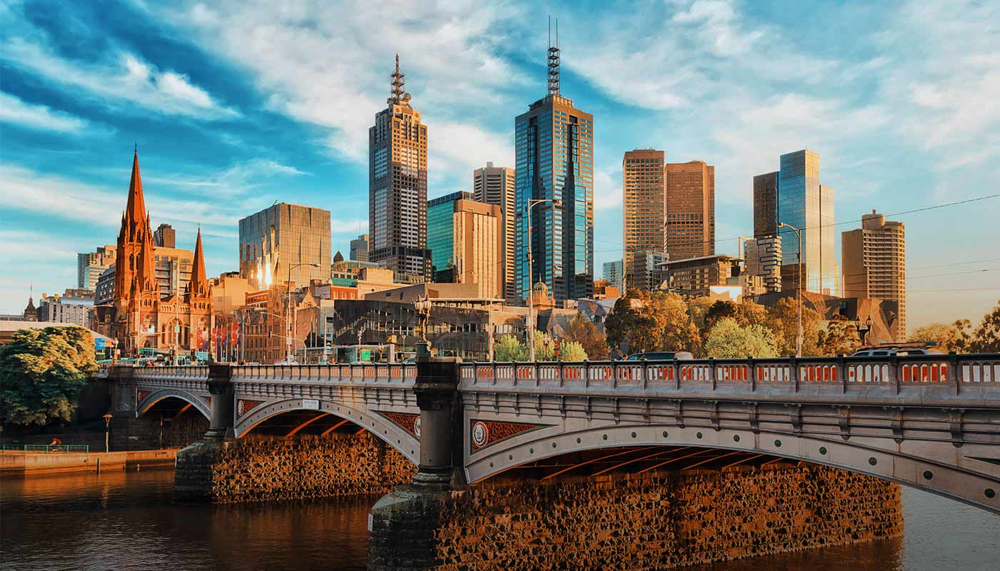
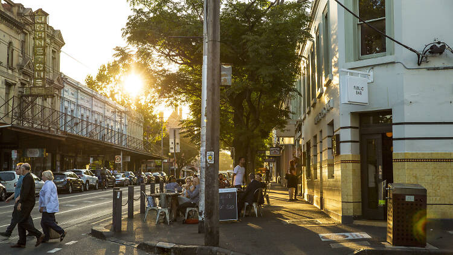

University Information
University of Melbourne

The University of Melbourne, known as UniMelb, is Australia's leading research-intensive university,
consistently ranking among the world's top institutions. Founded in 1853, it boasts a rich history
and a
reputation for academic excellence.
Parkville Campus
The Parkville campus is the university's main and most iconic campus, located just north of
Melbourne's
central business district. It is home to historic sandstone buildings, modern research facilities,
libraries, and world-class lecture theaters. The Parkville campus provides an immersive academic
environment and is where many of the university's faculties and research centers are based.
Southbank Campus
Situated along the Yarra River, the Southbank campus is known for its focus on the arts, including
the
Faculty of Fine Arts and Music. It features state-of-the-art facilities, including theaters,
galleries,
and studios.
Creswick Campus
Located in the Victorian countryside, this campus specializes in forestry, land and water
management,
and natural resource management. It provides a unique outdoor learning environment for students in
these
fields.
Monash University
Monash University is Australia's largest university and is renowned for its cutting-edge research
and
innovation. Established in 1958, it consistently ranks among the top universities worldwide.
Clayton Campus
The Clayton campus is Monash's largest and main campus. It features a range of modern facilities,
including libraries, laboratories, sports centers, and student accommodation. Clayton is known for
its
strong focus on science, engineering, and technology disciplines.
Caulfield Campus
Located in the vibrant Caulfield neighborhood, this campus is known for its emphasis on business,
arts,
and social sciences. It offers a bustling urban environment with cafes, galleries, and cultural
events.
Peninsula Campus
Situated in the seaside suburb of Frankston, this campus specializes in health and wellbeing
disciplines, including medicine, nursing, and allied health. It provides access to clinical training
facilities and is close to healthcare institutions.
Parkville Campus
Monash's presence in Parkville focuses on research, particularly in the medical and pharmaceutical
fields. It collaborates closely with nearby medical research institutes and hospitals.
RMIT University

RMIT University, originally founded in 1887, is known for its strong emphasis on design, technology,
and
creativity. It's a global leader in art and design education and is highly regarded for its
commitment
to hands-on learning.
City Campus
RMIT's City campus is located in the heart of Melbourne. It features modern buildings and facilities
dedicated to various disciplines, including business, engineering, and design. The campus is
well-connected to public transport and offers a vibrant urban student experience.
Bundoora Campus
This suburban campus is known for its focus on health and biomedical sciences. It hosts cutting-edge
research facilities and is close to major hospitals and healthcare centers.
Brunswick Campus
The Brunswick campus specializes in fashion, textiles, and the creative arts. It offers studios,
workshops, and industry-standard equipment for students pursuing creative disciplines.
Deakin University

Deakin University is renowned for its innovative approach to education and strong links with
industry.
Established in 1974, it's known for preparing students for the challenges of the digital age.
Burwood Campus
Deakin's Burwood campus is the largest and most comprehensive, offering a wide range of courses and
facilities. It includes modern teaching spaces, research centers, and recreational facilities.
Waurn Ponds Campus
Located in Geelong, this campus is known for its focus on health and life sciences. It provides
access
to state-of-the-art laboratories and research centers.
Waterfront Campus
Situated on Geelong's picturesque waterfront, this campus specializes in business, tourism, and
hospitality. It offers stunning views of Corio Bay and provides a dynamic learning environment.
Warrnambool Campus
Deakin's regional campus in Warrnambool specializes in marine and environmental sciences. It
features
specialized facilities for coastal and marine research.
City Insights
Immerse Yourself in Melbourne's Vibrant Culture

-
Cultural Experiences:
Melbourne is renowned for its rich cultural scene, with events and festivals happening
year-round. Explore a comprehensive calendar that highlights:
- Festivals: Discover celebrations like the Melbourne International Film Festival,
Melbourne
Food and Wine Festival, and White Night Melbourne.
- Exhibitions: Immerse yourself in art and culture with exhibitions at the National
Gallery of
Victoria (NGV) and other renowned venues.
- Performing Arts: Enjoy world-class theater, ballet, and opera performances at iconic
venues
like the Arts Centre Melbourne and Her Majesty's Theatre.
- Music: From live bands in local pubs to international acts at festivals, Melbourne's
music
scene caters to all tastes.
- Cultural Neighborhoods: Explore diverse neighborhoods such as Fitzroy, Brunswick, and
St.
Kilda, each with its own artistic and cultural charm.
-
Local Attractions:
Melbourne boasts a wealth of attractions that cater to a wide range of interests:
- Iconic Landmarks: Visit iconic sites like Federation Square, the Royal Botanic Gardens,
and
the Shrine of Remembrance.
- Museums and Galleries: Immerse yourself in history and art at institutions like the
Melbourne Museum and the Australian Centre for Contemporary Art (ACCA).
- Parks and Beaches: Enjoy the great outdoors at parks like Royal Park and Brighton Beach.
- Sporting Events: Melbourne is known as the sporting capital of Australia. Attend events
at
venues like the Melbourne Cricket Ground (MCG) and Marvel Stadium.
- Shopping: Explore shopping districts like Bourke Street Mall and Chapel Street for
fashion,
gifts, and unique finds.

-
Transportation Tips:
Navigating Melbourne is made easy with practical advice on transportation options:
- Public Transport: Discover Melbourne's extensive tram, train, and bus network, including
how
to obtain myki cards for seamless travel.
- Cycling: Explore bike-friendly routes, share-bike programs, and tips for cycling safely
in
the city.
- Car Sharing: Learn about car-sharing services that provide convenient transportation
solutions.
- Walking Trails: Discover scenic walking trails and explore Melbourne's picturesque
neighborhoods on foot.
-
Accommodation Guidance:
Finding suitable accommodation is crucial. Access information on different housing options:
- Student Housing: Explore on-campus and off-campus student housing options offered by
universities.
- Apartments: Learn about renting apartments in Melbourne, including lease terms, rent
prices,
and what to expect.
- Shared Rentals: Consider shared accommodation with other students for a cost-effective
and
sociable living arrangement.
- Neighborhood Insights: Understand the characteristics and advantages of different
neighborhoods in Melbourne to find the right fit for your lifestyle.
-
Safety and Health:
Safety and well-being are top priorities. Access resources to stay safe and healthy:
- Emergency Contacts: Have access to important emergency numbers, including police, fire,
and
medical services.
- Healthcare: Learn about the Australian healthcare system, where to find medical
services,
and how to access health insurance.
- Safety Tips: Stay informed about safety precautions to take while living and studying in
Melbourne.

-
Local Cuisine:
Explore Melbourne's diverse culinary scene, renowned for its international flavors and
culinary
creativity:
- Local Dishes: Discover iconic dishes like the classic "Aussie" meat pie, "fish and
chips,"
and Vegemite on toast.
- Cafés: Melbourne is famous for its coffee culture. Find the best cafés for your daily
brew.
- International Cuisine: Enjoy a global dining experience with a wide range of
international
restaurants and street food stalls.
- Food Markets: Visit food markets like Queen Victoria Market and South Melbourne Market
for
fresh produce and gourmet treats.
-
Community Insights:
Connect with the local international student community:
- Student Associations: Learn about student associations and clubs that cater to various
interests and cultures.
- Events and Gatherings: Stay updated on events, meetups, and social gatherings organized
by
and for international students.
- Support Networks: Access resources for academic support, counseling services, and
cultural
integration programs.